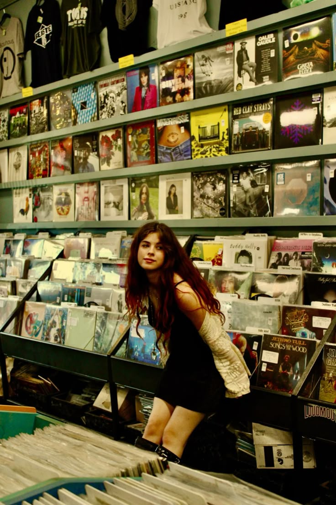
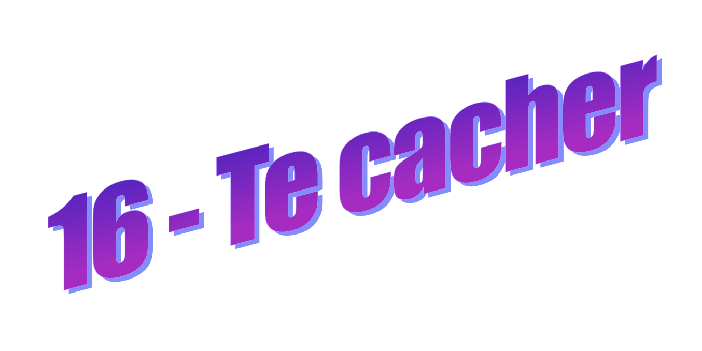
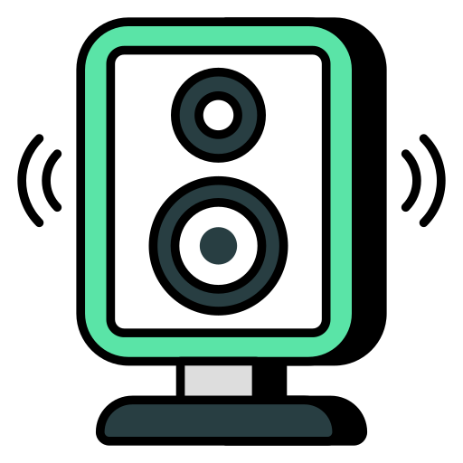
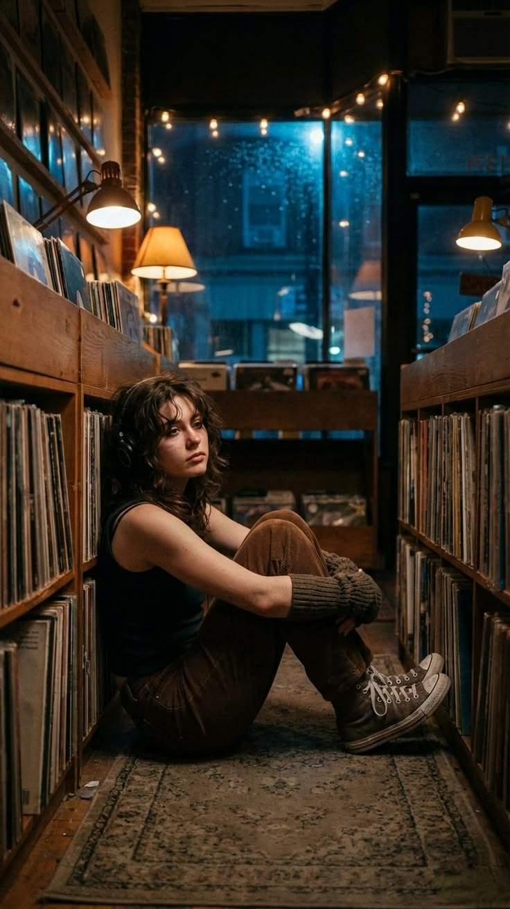
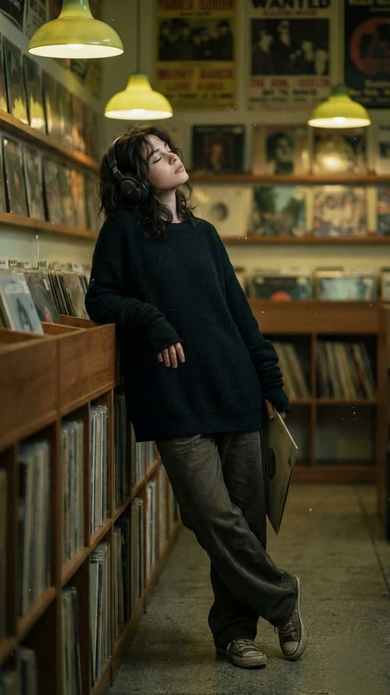

Les rires explosifs d'Aude et Soline envahissent tout à coup la boutique. Tu pensais avoir un peu plus de temps pour toi, en éventuel tête à tête avec Vincent...
Réflexe reptilien, tu te planques entre deux bacs de vinyles. “Jazz expérimental” d’un côté, Compilations 2000’s” de l’autre.

- T’es sérieuse là ?
Tu sursautes.
Vincent est juste là, accoudé à l’étagère, un casque autour du cou.
- Euh… salut.
Un client passe derrière vous, un CD « Hit Machine 2002 » tombe. Personne ne réagit.
- Tu te caches ? dit-il.
- Non. Enfin si. Non. Pas vraiment.
Tu laisses échapper un petit rire nerveux.
- Ok…
Il ne dit rien. Tu ne dis rien. Vous attendez, yeux de merlans frits et bouches entrouvertes. Enfin toi, surtout. Lui a l'air totalement circonspect. Il est vachement beau quand même...
- Je voulais te demander un truc, dis-tu, voix tremblante et
tachycardie visible à l’œil nu. Tu te lances enfin.
- Vas-y.
-
Enfin… c’est nul.
- Dis quand même.
Tu déglutis, et ça fait un vieux bruit un peu immonde.
- Y a la fête foraine Saint-Martin ce soir. Et… je sais pas… si tu veux venir... avec moi ?
Il te regarde d'un air encore plus circonspect.
- Ce soir ?
- Ouais. Mais t’es pas obligé hein. C’est juste… si t’as envie.
La ligne de basse de « Let's get it on » de Marvin Gaye résonne dans tout le magasin. Le suspense est à son comble.
- Je devais voir des potes.
- Ok, pas de soucis, désolée, je voulais pas...
- Mais… je peux passer avant. Disons d'ici 1h ?
Il interrompt le flot carminatif de tes bourrasques de pensées. Tu fais la mise à jour de ce qu'il vient de t'annoncer. It's a date !!! (tu le penses, tu ne le dis pas) Ton visage doit afficher des lignes de code en cascade, se contredisant l'une l'autre et se traduisant en javascript émotionnel de la détresse à l'alacrité.
- T’es bizarre aujourd’hui.
- Je sais.
Tu restes coincée derrière les vinyles, comme si sortir de là était devenu une décision importante de vie.
- Je te redis.
- Ok.
Tu ne bouges pas tout de suite.
- Je suis toujours là derrière les disques si jamais.
- J’avais remarqué.

Tu attends 1h à Madison Nuggets, tu dis au revoir à Aude, Soline et Emma (prétextant que ton père viendra te chercher car il voit un client rue des Palmiers, à deux pas – donner un détail pour calmer les suspicions – tu as déjà calculé que tu pourrais prendre le dernier train de 20h jusqu'à chez toi, et ainsi revenir pour le repas du soir.)
Tourne à la page 12 pour mettre en place
ton plan machiavélique du love → la fête foraine avec Vincent !!